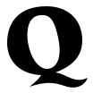
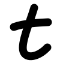
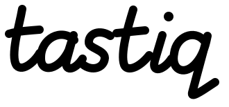

Для человека, который хочет найти подходящую игру или историю и устал перебирать варианты. Логотип должен запоминаться сам по себе — без оформления сайта и без привязки к одному виду развлечений.
Черно-белая форма — основа. Цветовые предложения пока отдельные.
Личный отбор
По процессу Impeccable · генеративный эскиз
Как маленькая марка культурного издателя: у отбора есть автор и свой вкус. Выразительное написание держит имя, отдельная Q становится личным знаком.

Q: 32 / 24px и упрощённая 24px
Риск: может показаться слишком издательским. В маленькой SVG-пробе убран внутренний завиток Q; окончательную связь с написанием ещё нужно довести.
Не каталог, а короткая личная рекомендация. Название работает как подпись человека, чей вкус тебе близок. Вместо отдельной пиктограммы — собственная t.


32 / 24px имя 120px
Риск: менее универсальный характер, а рукописное имя сложнее прочитать при сильном уменьшении.
Сравниваем чёрно-белые формы. Ни один вариант пока не утверждён.
На чём основаны идеи
Сценарий известен: человек хочет найти что-то под сегодняшнее желание, а не изучать бесконечный каталог. Поэтому пробуем три роли бренда: отбор с собственным вкусом, подходящее совпадение и личная рекомендация.
Это гипотезы по смыслу продукта. Исследования эстетических предпочтений аудитории у нас пока нет. Утверждать, что эти формы «точно ваши», оснований нет.
Что здесь сделал Impeccable, а что я
Impeccable — метод артдирекции, а не отдельная модель или дизайнер. Для первого варианта применены его разбор контекста, поиск культурных направлений, concept-seed и требования к цельному силуэту; эскиз изготовлен встроенным генератором изображений. За выбор идеи и оценку отвечаю я. Для первой концепции отдельно нарисована упрощённая SVG-проба Q на24px.
Второй и третий варианты нарисованы мной из SVG-контуров: символ, каждая буква и рукописные кривые. Готовые шрифты для этих двух логотипов не использовались. Это позволяет обсуждать конкретную геометрию, а не только выбирать стиль картинки.
Это три предложения, а не готовый бренд. Векторность не заменяет художественную доводку, а автоматическая проверка не доказывает попадание во вкус человека. Палитра сайта не использована как ограничение. Первая серия · Отклонённая вторая серия